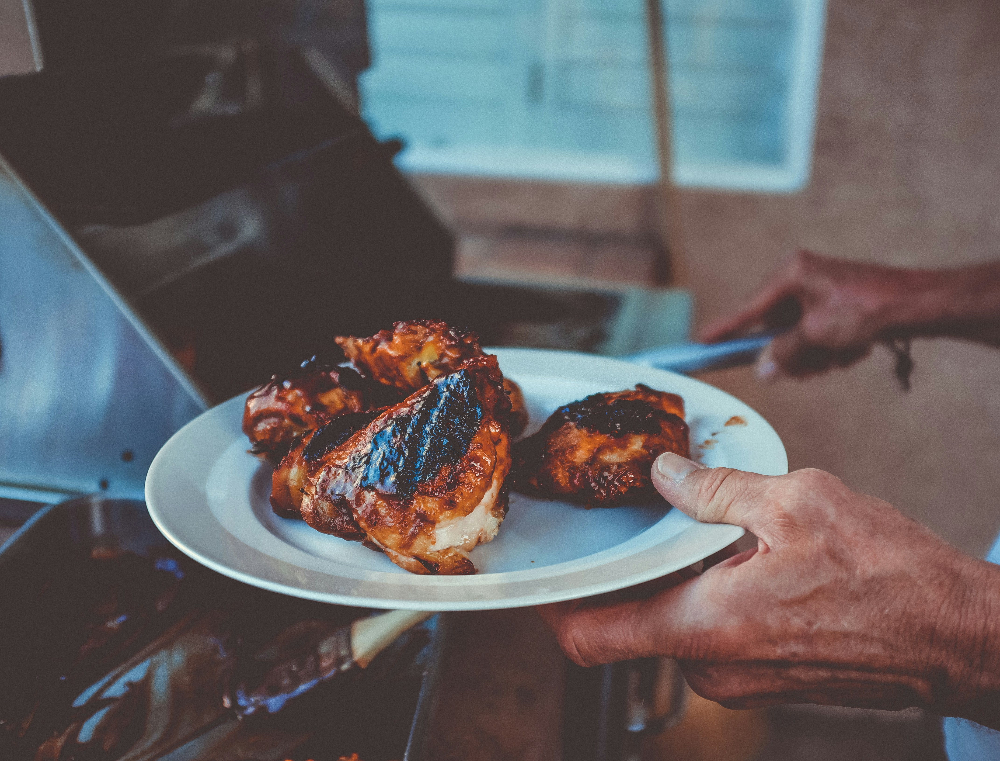

Chicken Tandoori Recipe

Description
Chicken Tandoori is a classic Indian dish known for its bold flavors and vibrant color. To prepare, start by marinating chicken pieces in a mixture of yogurt, lemon juice, olive oil, garlic, and ginger paste. Add a blend of spices such as cumin, coriander, turmeric, garam masala, and paprika, which give the chicken its characteristic smoky flavor and vibrant red color. Let the chicken marinate for several hours or overnight to absorb the flavors. Once marinated, the chicken is traditionally cooked in a tandoor, a clay oven, but it can also be grilled or baked in a conventional oven. Cook until the chicken is tender with a slightly charred exterior. Serve with lemon wedges, fresh cilantro, and a side of naan or rice for a complete, flavorful meal. Chicken Tandoori is a perfect dish for barbecues or dinner parties, offering a taste of traditional Indian cuisine.
Ingredients
- 2 pounds chicken, cut into pieces
- 1 medium lemon, juiced
- 1 teaspoon salt
- 1 ¼ cups plain yogurt
- ½ medium onion, finely chopped
- 1 clove garlic, minced
- 2 teaspoons garam masala
- 1 teaspoon grated fresh ginger root
- 1 teaspoon cayenne pepper
- 1 teaspoon red food coloring (Optional)
- 1 teaspoon yellow food coloring (Optional)
- 2 teaspoons finely chopped cilantro
- 1 medium lemon, cut into wedges
Steps
- Gather all ingredients.
- Remove and discard skin from chicken pieces. Cut slits into meat and place into a shallow dish. Season chicken on both sides with lemon juice and salt. Let sit for 20 minutes.
- Mix yogurt, onion, garlic, garam masala, ginger, and cayenne pepper together in a medium bowl until smooth, then stir in food coloring.
- Spread yogurt mixture over chicken, cover, and refrigerate for 6 to 24 hours (the longer the better).
- When ready to cook, preheat an outdoor grill for medium-high heat and lightly oil the grate. Remove chicken from marinade. Discard remaining marinade.
- Cook chicken on the preheated grill until no longer pink and the juices run clear. An instant-read thermometer inserted near the bone should read 165 degrees F (74 degrees C).
- Garnish with cilantro and lemon wedges.